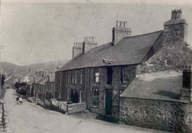
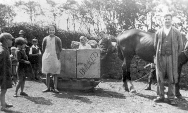

Siop Pen-y-groes
 Siop Elin Hughes yn y blynyddoedd cynnar, ac Evan Wyn a Morfudd Owen, Ceridwen Roberts, Carol Bonehill yn ddiweddarach cyn trosglwyddo’n eiddo i’r gymuned fel Siop Pen-y-groes.Siop Elin Hughes oedd hon yn y blynyddoedd cynnnar, yna Evan Wynne a Morfudd Owen ac am flynyddoedd wedyn Ceridwen Roberts. Arferai Evan Wynne gario nwyddau i Nant Gwrtheyrn o ben y gamffordd gyda cheffyl a sled William Thomas, Tŷ Canol, Nant. Yn 1995 penderfynodd y bostfeistres a pherchennog Siop Pen-y-groes ei bod am ddod â’r busnes i ben. Galwyd cyfarfod cyhoeddus a gwnaed penderfyniad i fynd ati i godi arian yn lleol i brynu’r siop. Sefydlwyd Cwmni Cydweithredol Menter yr Eifl yn 1996.
Mae Dewi Williams, Brynmor yn cofio Siop Evan Wyn (brawd Mari Fron) a Morfydd yn y 1940’au ac roeddent hefyd yn rhedeg siop yn Mountain View yn Nant Gwrtheyrn. Yn 1901, Ellen Hughes oedd yn cadw’r siop, yna daeth Evan Wynne a Morfudd Owen. Bu Ceridwen Roberts yn ei chadw am flynyddoedd wedyn.
Cofia Gwyn Elis, Plas fod Evan Wynne yn cario nwyddau o’r siop i Nant Gwrtheyrn ar ôl i’r siop yn Nant gau. Roedd gan M.J. siop yn y nant hefyd ac arferai gario nwyddau yr un modd ond gyda cheffyl a sled Gwilym Hughes, Ty Uchaf, Nant.
Yn ystod 1995 penderfynodd y bostfeistres a pherchennog Siop Penygroes, Carol Bonehill, ei bod am ddod a’r busnes i ben. Galwyd cyfarfod cyhoeddus. Y penderfyniad oedd sefydlu pwyllgor a mynd ati i godi yr arian angenrheidiol yn lleol er mwyn prynu’r siop. Bu’r ymateb yn anhygoel gyda 99 o deuluoedd yn cyfrannu £6,500 rhyngddynt. Cafwyd cymorth ariannol o ffynonellau eraill hefyd. Sefydlwyd Cwmni Cydweithredol Menter yr Eifl yn 1996.
SIOP PEN-Y-GROES Llithfaen
gan Sianelen Pleming.
Nid yw mentrau cydweithredol yn estron i gymdeithas chwarelyddol yr Eifl. Wrth fynd yn ôl i ddiwedd saithdegau'r ddeunawfed ganrif cawn griw o weithwyr yng Ngwaith Mawr Llan’huar (sef chwarel Trefor) yn sefydlu'r Eifl Workers Co-operative Society ac yn agor siop yn Ffordd yr Eifl (Farren Street bryd hynny) i ddiwallu anghenion y gymdogaeth. Hon oedd yr ail siop Go-op i’w sefydlu drwy wledydd Prydain benbaladr. Roedd pentref Trefor wedi tyfu yn aruthrol o osod y garreg sylfaen gyntaf yn 1856 a’r galw am siop yn amlwg. Aeth y cwmni o nerth i nerth ac agor canghennau yng Nghlynnog, Llanaelhaearn a Llithfaen.
Roedd y stôr, fel y’i gelwid, yn cydweithio â’r chwarel i ddod â nwyddau i mewn ar longau gwag oedd yn dod i nôl y cerrig ithfaen o’r gwaith. Byddai’r chwarelwyr yn gweithio am ddim yn eu tro yn y stôr yn Llithfaen ar ôl gweithio diwrnod o waith yn y chwarel yn torri’r garreg. Gyda’r nos oedd oriau agor y stôr, gan fod y dynion a weithiai ynddi wrth eu gwaith yn ystod y dydd. Byddai dau neu dri ohonynt wrth y cownteri, un arall wrth y ddesg yn cadw cyfrifon yn y lejar mawr, cyn rhoi entri yn llyfr bach y cwsmer. Byddai’r talu ar nosweithiau tâl y chwarel, nos Wener neu nos Sadwrn a’r lle yn llawn hyd ddeg o’r gloch y nos.
Yn ystod y dydd roedd llu o siopau eraill ym mhentref Llithfaen - Cambrian, siop Miss Jones, becws Gwalia, Alpha Stores, Fron, y Faenol, Llys Mair, barbar a chrydd, siop Tudor ac, wrth gwrs, siop Morfudd, sef siop Pen y Groes. Atyniad digamsyniol y Stôr oedd y difidend bondigrybwyll. Gan fod gan y teuluoedd siâr yn y busnes roedd y stôr neu’r coparet yn talu hanner coron yn y bunt o ddifidend ar yr arian a wariwyd yn y siop.
Ar yr ail o Fai, 1950 aeth Lena Pritchard i weithio i’r stôr oedd yn dal, bryd hynny, yn Compton House. Roedd y stôr yn cyflogi dau - Harold James yn rheolwr a Lena yn gweithio yno. Bryd hynny deuai nwyddau o Drefor mewn fan. Roedd cig a nwyddau ffres yn dod i ordor o’r siop yn Nhrefor yn ddyddiol. Roedd gan bob teulu rif a chedwid cofnod o wariant bob teulu yn y llyfr cownt a fyddai’n cael ei anfon i Drefor lle'r oedd y cowntiau yn cael eu cadw. Telid y difidend bob chwe mis. Chwe wythnos cyn talu’r difidend byddai arwydd yn y siop bod angen clirio’r cownt erbyn nos Wener. Byddai hyn yn rhoi cyfle i bawb dalu’r holl arian oedd wedi ei ‘roi i lawr’ cyn cau’r cyfrifon. Yn fuan wedyn symudodd y Stôr i hen siop Miss Jones, cyn cau yn derfynol ym mis Hydref 1969.
Roedd yn amhosibl i’r cwmni cydweithredol gystadlu â siopau megis Kwiksave oedd yn agor yn y trefi. Roedd gan y teuluoedd geir erbyn hyn ac roedd hi gymaint haws crwydro i chwilio am neges a bargen a phawb wedi cynhyrfu efo’r siopau newydd, gwerthu bob dim, yma. Erbyn hyn roedd siop Tudor, y barbar a’r crydd, Fron a Cambrian wedi cau hefyd ond roedd siop tsips wedi agor yn y pentref! Parhau fu hanes y dirywiad ac erbyn 1980 doedd ond siop Pen y Groes yn gwerthu nwyddau yn Llithfaen a mwy a mwy o’r pentrefwyr yn siopio y tu allan i’r pentref.
Erbyn 1996 roedd argyfwng yn y siop a’r perchennog yn ymddeol fel postfeistres ac am werthu’r adeilad. Trefnodd cyngor cymuned Pistyll holiadur i bob aelwyd yn yr ardal a chafwyd ymateb calonogol iawn iddo. Gwnaed ymholiadau gan y cyngor cymuned i Gyngor Dosbarth Dwyfor am arian ac addawyd £10 000 o raglen Gwella Adnoddau Cymunedol. Ar y pryd roedd yr hen gyngor Dwyfor yn dirwyn i ben ac yn cael ei lyncu gan gyngor Gwynedd. Roedd £100 000 o adnoddau yn cael eu rhannu yn y gronfa ac aeth pethau yn o dynn rhwng cais o Lanbedrog a chais y siop. Bu dadlau brwd rhwng J. Llyfnwy Jones a chynghorydd Llanbedrog a’r bleidlais yn y diwedd yn gyfartal. Aelth pleidlais y cadeirydd, y diweddar Brian Evans o blaid cais Llithfaen. Roedd menter gydweithredol yn y broses o gael ei ffurfio ac addawodd y cyngor y byddai’n anrhydeddu’r grant i’r cwmni newydd hefyd.
Dangosodd y pentrefwyr eu cefnogaeth i’r cwmni cyfyngedig trwy warant newydd Menter yr Eifl. Mewn cyfarfod ar nos Lun, 22 Ionawr, 1996 etholwyd pwyllgor llywio, sef, John Llyfnwy Jones, Ken Jones, Jessie Ellis, Kelvin Pleming a Myrfyn Roberts i symud ymlaen i brynu’r adeilad. Trwy drugaredd roedd y perchennog yn fodlon dod i drefniant efo’r cwmni newydd a chadw’r siop yn agored nes byddai’r arian wedi’i godi, a’r cwmni yn barod i redeg y siop. Cafwyd addewid o £9, 500 gan gwmni Cymad, £5, 000 i brynu’r adeilad a £4, 500 i wneud gwelliannau iddo, yn arbennig ar y to. Cafwyd cymorth gan Ganolfan Cydweithredol Cymru Cyf i roi'r cwmni ar ben ffordd efo manylion sefydlu’r fenter.
Cafwyd ymateb anhygoel gan y pentrefwyr a naw o bob deg cartref yn cefnogi’r fenter a dod yn aelod o’r cwmni. Bu’r pwyllgor yn ymweld â phob cartref yn yr ardal a 4 aelwyd yn unig oedd heb gefnogi’r fenter o gwbl. Wrth ddod yn aelod roedd £10 yn mynd fel tâl aelodaeth a £90 yn rhodd ddi-log i’r cwmni. Casglwyd £6,500 gan y pentrefwyr ac roedd y fenter ar ei thraed. Ar y dechrau roedd y pwyllgor yn rhedeg y siop, yn mynd i John Edwards ym Mangor i brynu nwyddau. Bu’n rhaid rhoi £600 fel ‘bond’ ymlaen llaw i gael yr hawl i werthu papurau newydd. Roedd ychydig o broblemau yn codi o orfod gadael y papurau nad oedd wedi eu gwerthu mewn bwnbel taclus y tu allan i’r siop er mwyn iddynt gael eu codi yn blygeiniol y bore wedyn. Pan ddaeth y cyfrifon diwedd wythnos sylweddolwyd nad oedd y papurau yno i’r cwmni eu codi. Beth tybed oedd yn digwydd iddynt? Ar ôl ychydig o waith ditectif darganfuwyd bod gŵr oedd wedi symud i’r pentref yn helpu ei hun i’r papurau a’u defnyddio i bapuro waliau ei dŷ, a hyd yn oed yn eu defnyddio fel cyrtans! Cafwyd gwirfoddolwyr i weithio yn y siop yn ystod yr wythnos a’r pwyllgor yn gweithio fwrw Sul. Hysbysebwyd am denant a daeth Ffion Llywelyn i’r adwy a dod yn bostfeistres ac yn siopwraig ym mis Awst 1996 gan dalu rhent isel i gwmni Menter yr Eifl. Yn y cyfnod yma gefeilliwyd a phentref Aberpennar gan bod mentrau cydweithredol yn digwydd yno hefyd. Bu’r ddwy gymuned yn ymweld â’i gilydd a chafwyd llwy addurniedig hardd iawn gan drigolion Aberpennar ar un ymweliad â’r siop.
Yn ddiweddarach yn y flwyddyn enillodd Menter yr Eifl wobr canmoliaeth uchel gan Wobrau Menter Gymunedol Banc y Midland. Bu Ffion yn denant ar y siop hyd fis Mai 2000. O hynny ymlaen bu nifer o denantiaid yn y siop a’r post a’r pwyllgor yn weithgar iawn yn cynnal y busnes rhwng tenantiaid. Un o denantiaid y siop yn 2003/2004 oedd Anwen Jones. Cafodd Anwen hwyl garw ar redeg y siop a’r post i’r graddau iddi gael gwobr gan Swydda’r Post. Enwyd Siop Pen-y-Groes fel siop oedd yn haeddu gwobr ardaloedd gwledig gan ei bod yn rhoi gwasanaeth da i’r gymuned ac Anwen, ei hun, mor glên bob amser. Derbyniodd Anwen y wobr yn y Café Royale yn Llundain a Swyddfa’r Post yn talu’r costau i gyd! Bu Sioned Roberts yn denant yn y siop am ddwy flynedd. Bu Sioned yn gweithio am tua deg mis cyn cael ei phenblwydd yn un ar bymtheg oed ar ddydd Sadyrnau ac ambell brynhawn. Pan gafodd ei phenblwydd derbyniodd denantiaeth y siop a’i rhedeg yn llwyddiannus iawn am ddwy flynedd. Roedd Sioned yn un o wragedd busnes ieuengaf Cymru yn y cyfnod. Tua’r un adeg daeth Ashley Hughes yn Nefyn hefyd yn ŵr busnes ifanc iawn, gan ail agor Hen Bost, Nefyn yn siop gwerthu nwyddau swyddfa. Un ar bymtheg oed oedd yntau. Yn ystod y cyfnod yma daeth i'r amlwg bod siopau mawrion y trefi yn effeithio ar siopau bach ein pentrefi ac nad oedd modd cynnal bywoliaeth mewn siop fechan.
Daeth yr ergyd farwol pan gyhoeddodd y Post eu bod yn cau'r gangen yn Llithfaen ac am ddefnyddio swyddfa symudol. Daeth hanner cant o’r pentrefwyr i gyfarfod cyhoeddus ond ofer fu protestio a chaewyd y Post ar 14 Chwefror, 2009. Sylweddolwyd hefyd bod y cwmni mewn dyled oherwydd bod dŵr, na wyddai neb amdano, wedi bod yn gollwng o’r pibau a’r bil dŵr dros £650 a dim incwm yn dod i mewn. Doedd dim dewis ond ystyried gwerthu’r adeilad.
Roedd teimlad o ddiymadferthedd llwyr wrth feddwl bod siop olaf y pentref yn mynd i gau. Roedd yr ysgol wedi mynd, dau gapel ac eglwys wedi’u troi yn dai a’r doctoriaid lleol wedi gorffen cynnal meddygfa yn y pentref. Roedd y post wedi cau eu gwasanaethau yn y pentref. Yr unig beth oedd yn dal i fynd yma oedd Tafarn y Fic. Yn y cyfnod pan oedd y siop wedi cau roedd yn rhaid bod yn anhygoel o drefnus, gan fod yn rhaid mynd i Nefyn i nôl peint o lefrith neu dorth o fara hyd yn oed. Rhaid oedd sylweddoli y byddai hon yn hoelen arall yn arch y pentref, ond hefyd nad oedd digon o fusnes i gynnal teulu yn y siop. Roedd yn rhaid meddwl am ffordd wahanol o gynnal y gwasanaeth. Anodd oedd codi llais yn y cyfarfodydd cyhoeddus, dim ond i leisio'r diymadferthedd y soniwyd amdano.
Roedd y ffaith fy mod fel athrawes yn wynebu arolygiad ddechrau Hydref a’r gŵr yr un modd yn ddiweddarach yn y tymor yn stwmp ar stumog hefyd. Fel athrawes, oedd yn ferch i ddau athro, doedd gen i mo’r syniad lleiaf sut i redeg siop! Cafwyd cyfarfod ar y 23 Mehefin lle y dywedwyd os nad oedd rhywun am ddod ymlaen i gymryd y siop y byddai’r adeilad yn cael ei werthu o fewn y mis. Roedd amser damcaniaethu ac athronyddu drosodd!
Cafwyd cyfarfod anffurfiol rhwng Kelvin, y gŵr, a minnau a dau deulu arall - Lisbeth a Peter James, oedd wedi ymddeol i’r pentref a Dafydd ac Ann Roberts, Tan yr Hafod. Penderfynwyd na allem adael i’r adeilad fynd heb ymdrech ac aethpwyd ati i lunio holiadur a mynd o gwmpas bob tŷ yn y pentref yn bersonol i weld beth oedd adwaith pawb i’r argyfwng yn y siop, gan ddilyn camau Menter yr Eifl ddeng mlynedd yn gynharach.
Daeth atebion cadarnhaol a gonest fel o’r blaen a’r mwyafrif yn gweld bod siop yn gaffaeliad i bentref ond yn cadarnhau hefyd mae ychydig o wariant wythnosol fyddai’n digwydd yn y siop - nid oedd posib troi llanw Tesco ac Asda! Felly roedd gennym gwsmeriaid ond doedd gan yr un ohonom syniad sut i agor siop, heb sôn am ei rhedeg wedyn. Rhaid oedd cael gair a gwybodusion ac entrepreneuriaid ein cymdeithas. Bu sgwrs a Rhys, siop Heulwen, Edern, Mel Roberts, fyddai’n dod yn achlysurol i weithio yn y Post yn Llithfaen, Myrddin ap Dafydd a John Pritchard yn gymorth garw i gadw’r hyder ar ôl yr iwfforia cychwynnol. Cynhaliwyd ein cyfarfod ffurfiol ar y degfed ar hugain o Orffennaf 2009 ac etholwyd swyddogion, - Dafydd Roberts yn gadeirydd, Peter James yn drysorydd a minnau yn ysgrifennydd.
Penderfynwyd glanhau'r adeilad ar yr ail o Awst, taro tra mae’r haearn yn boeth ac agor ar ddydd Iau, 13 Awst gan fod rhaid dechrau gwneud arian er mwyn talu rhent i Fenter yr Eifl. Roedd Lilian ac Ifan Hughes, Garej Ceiri yn fodlon cyflenwi llefrith a phapurau i’r siop a becws Glan-rhyd yn hapus i gyflenwi archeb bara ond i rywun fynd i nôl y nwyddau o Lanaelhaearn. Roedd Anwen Jones, a arferai gadw’r siop a’r post yn fodlon helpu efo’r llyfrau. Cynhaliwyd cyfarfod ar y trydydd o Awst i bawb oedd â diddordeb mewn gwirfoddoli neu helpu mewn unrhyw ffordd. Cafwyd benthyg arian yn ddi-log gan gymwynaswyr yn y pentref a gwariwyd yr arian ar brynu stoc. Penderfynwyd hefyd ar system o basio’r goriad i’r un fyddai ar y shifft nesaf ond un er mwyn sicrhau bod digon o gyfle i chwilio am oriad pe na bai’r system yn gweithio. Cynhyrchwyd taflen i hysbysu’r agoriad a rhoi’r newydd da i’r cyfryngau.
Felly, yn y pythefnos yna roedd criw o bobl yn eu hoed a’u hamser oedd yn deall dim am fyd busnes, heb gyfalaf cychwynnol wedi penderfynu agor siop! ‘Dwi’n siŵr bod hen drafod ar hirhoedledd y fenter! Cafwyd wythnos o ras gan gwmni R.H.Evans, wyau Tir Bach, Harlech a Blakemore, Glanrhyd a Garej Ceiri oedd yn fodlon cyflenwi nwyddau ar ein cyfer.
Yna daeth Eisteddfod Genedlaethol y Bala a meddwl yn fy niniweidrwydd y byddai rhyw gorff cyhoeddus yn fodlon helpu menter mor bwysig ag ail agor siop bentref yng nghefn gwlad Cymru. Er mynd o gwmpas pebyll y cynulliad, y loteri a Chyngor Gwynedd yr un oedd y gân - am fod gennym syniad a bod y prosiect yn mynd i ddigwydd beth bynnag nid oedd yn bosibl cael arian gan neb. Roedd digon o grantiau i feddwl am syniadau, i ddatblygu syniadau nad oeddem wedi meddwl amdanynt, ac i arall gyfeirio ond dim dimai goch i ddatblygu syniad oedd yn bod eisoes!
Dyma ddyfyniadau perthnasol o ddyddiadur personol Sianelen Pleming 2009:
| 8 Awst | Sortio silffoedd a dechrau paentio waliau’r siop. |
|---|---|
| 9 Awst | Argraffu a dosbarthu taflenni’r siop. |
| 10 Awst | Mynd i’r dre i sortio insiwrans y siop. Kelvin yn ll’nau llofft y siop. Cyfarfod Anwen am 5 a gwneud ordor derfynol ar gyfer dydd Iau. Dysgu sut mae’r til yn gweithio. |
| 11 Awst | Mynd i’r dre wedyn i sortio Hywel ‘Rynys, Harlech a ffrwythau Ian Roberts. Ffonio Ffion ynglŷn â’r cacennau. |
| 12 Awst | Codi Lis yn Llanaelhaearn am ddeg o’r gloch a mynd yn syth i Blakemore. Gwario tua £250!!! Kelvin yn cyfarfod John Caerau ac wedi gwirioni efo’r gwn prisio! Wrthi tan 2 yn prisio a gosod. Mynd efo Lis wedyn i hel manion o Lidl ac Iceland i lenwi ychydig ar y silffoedd ac i Harlech i godi’r archeb. Wrthi tan tua 6 yn gosod y rheini. Mynd i Plas i nôl wyau a nôl y cacennau gan Ffion. Nôl i’r siop am hanner awr wedi saith i siarad efo dyn Radio Cymru ac arwyddo’r brydles. Mynd i nôl Indians i swper ac yn syth i ngwely. |
| 13 Awst | Kelvin yn nôl llefrith a bara. Finna’n mynd at R. H. Evans ac Ian Roberts. Cyrraedd yn ôl am 5 munud i wyth. Mrs Blair wedi bod! Pethau’n brysur iawn yn y bore. £178 trwy’r til. Dipyn bach o boen efo’r til – cloi weithiau – human error! Kelvin wedi nôl mwy o bapur ddwywaith, mwy o lefrith dair gwaith a finna’n nôl mwy o fara a chig. |
Roedd y siop wedi agor!
Bu cyfnod wedyn o geisio rhoi trefn ar bopeth, llenwi ffurflenni’r cyflenwad papurau newydd, cofrestru sefydliad busnes a dal i siarad efo gwahanol gyrff ynglŷn â chael grant. Cysylltwyd hefyd â Mike Williams o Ganolfan Gydweithrdol Cymru a fu’n allweddol mewn cofrestru unigolion fel cwmni i redeg y siop. Daeth Anwen Jones hefyd yn aelod o’r cwmni cydweithredol trwy warant.
Ar ôl bod yn agored am ychydig roeddem yn ymwybodol na allai’r siop redeg ar wirfoddolwyr yn unig. Roedd angen rhywun sefydlog yn y bore i gadw’r sioe i fynd. Dangosodd Ffion Griffiths, perchennog cwmni Sinamon a chyflenwr cacennau i’r siop, ac a fu’n denant i Menter yr Eifl am gyfnod, diddordeb ond roedd yn amlwg oddi wrth y cyfrifon na allem gyflogi heb ddyblu ein hincwm. Roedd yr holl elw yn mynd i lenwi silffoedd y siop.
Daeth Lea, oedd yn gweithio i AOHNE i’r adwy a’n cynorthwyo i wneud cais am grant. O’r diwedd cawsom gorff oedd yn deall beth oedd ein hanghenion a chorff oedd yn fodlon ein cefnogi yn ariannol. Yn ein cyfarfod ym mis Tachwedd, dri mis ar ôl agor, penderfynwyd talu'r arian a fenthycwyd yn ôl fel ein bod yn gwybod nad oedd arnom arian i neb. Ar y deunawfed o Dachwedd cafwyd grant gan AOHNE i gyflogi am 20 awr yr wythnos a phrynu oergell newydd a ffôn. Roedd hyn yn sicrhau ein bod yn gallu cynnal oriau agor o 8 tan hanner dydd ac o 3 tan 7 yn y prynhawn. Dyma un o’n hegwyddorion cychwynnol, sef bod yn rhaid i’r siop fod yn agored ben bore - er mwyn dal y tri bws ysgol sy'n mynd o’r pentref. Hefyd yr oedd hi'n hanfodol sicrhau ein bod yn agored gyda’r nos pan oedd pobl yn dod o’u gwaith ac yn hwylio i wneud swper.
Penderfynwyd gwahôdd Siôn Corn i’r siop y Nadolig hwnnw a braf oedd gweld Anti Lena, fyddai’n arfer gweithio yn y stôr bron i hanner canrif ynghynt, yn eistedd ar ei lin! Roedd hyn yn ffordd o ddiolch i’r gymuned am fod yn amyneddgar efo’n hymdrechion trwsgl i ddechrau busnes o ddim!
Ar ddiwedd y flwyddyn gyntaf roedd gennym tua £3, 000 yn y banc, y benthyciadau i gyd wedi eu talu a gwerth £2, 200 o stoc ar y silffoedd. Ar ôl y flwyddyn gyntaf honno sylweddolwyd nad dipyn o hwyl oedd hyn oll ond bod y pentref, erbyn hyn, yn dibynnu ar y siop ar gyfer manion bethau. Roedd hi’n ddyletswydd arnom bellach i gadw’r fenter i fynd. Roedd hi’n hawdd gweld hefyd bod siop y pentref yn fwy na lle i gael torth, papur a pheint o lefrith. Roedd yr elfen gymdeithasol yn gref iawn a braf oedd gweld y pentref yn dychwelyd i’r hen batrwm cymdeithasol, - llafnau’r ysgol uwchradd yn hel at ei gilydd yn y bore efo sosej rôl Glanrhyd a photel o Gôc, dau neu dri o ddynion yn eistedd ar y fainc ganol bore yn rhoi'r byd yn ei le a’r merched yn stopio am sgwrs wrth basio. Deuai’r bobl ifanc wedyn yn ôl gyda’r nos ar y fainc cyn mynd i’r cae am gêm. Roedd lle eto i roi posteri digwyddiadau yn y pentref, lle i atgoffa hwn a llall am wahanol bethau oedd yn digwydd yn y pentref a lle i adael ambell barsel os nad oedd y perchennog adref. Roedd pobl a phlant i’w gweld eto ar y groes yn Llithfaen. Mae’n ganolfan hefyd i newydd ddyfodiaid i’r pentref ddod i gyfarfod pobl ac i ddysgu ychydig am ein cefndir ac i ddefnyddio’r Gymraeg mewn ffordd naturiol.
Cafwyd grant arall i sicrhau cyflogaeth Ffion yn y boreau am dair blynedd gan AOHNE. Roedd hyn hefyd yn ariannu cyflogaeth Siân Roberts ar benwythnosau. Mae cyfraniad y ddwy wedi bod yn amhrisiadwy i redeg y siop, sicrhau dilyniant a gofalu bod y pentrefwyr yn cael gwasanaeth dwyieithog. Erbyn hyn, nid oeddem felly yn ddibynnol ar wirfoddolwyr ond am gymorth ar brynhawniau yn ystod yr wythnos. Dros y ddwy flynedd nesaf roedd yr arian yn mynd yn ôl ar silffoedd y siop gan geisio dyfalu beth fyddai anghenion y cwsmeriaid fel nad oeddem yn gwneud colled ar y nwyddau. Roeddem hefyd yn gallu cadw’r prisiau yn isel gan nad oedd yr un ohonom yn gwneud elw personol a neb yn dibynnu ar y fenter am fywoliaeth. Ar ôl i’r siop fod yn agored am flwyddyn roeddem yn dal i gefnogi busnesau lleol fel J. H. Owen, Harlech, Sinamon, Oinc Oinc, Ian Roberts, R. H. Evans a Snowdonia Supplies. Roedd Meinir, Cefn Gwynus a Liz, Ty’r Ysgol yn gwneud cardiau, ac roeddem wedi ehangu ein gorwelion i gynnwys cynnyrch Blas ar Fwyd, becws Henllan, y Gyfrinach Felys a Derrimon ac wedi prynu peiriant diod cynnes Nescafe to Go, peiriant gwneud ysgytlaeth a phopty ar gyfer pasteion a chacennau.
Y cam nesaf oedd gwneud cais am drwydded i werthu alcohol. Ein bwriad o’r cychwyn oedd gwerthu gwin a chaniau yn unig a rheoli’r sefyllfa yn dynn. Gan ein bod i gyd, fel cwmni, yn gweithio gyda’r ieuenctid yn yr ardal, trwy’r ysgol Sul, clwb CIC ac Aelwyd Gwrtheyrn roeddem yn ymwybodol iawn o’r peryglon o werthu alcohol ond hefyd yn ymwybodol iawn bod yn rhaid i’r siop fod yn hunan gynhaliol ar ôl i’r grant AOHNE ddod i ben. Doedd dim elw i’w wneud o werthu sigaréts ond roedd elw alcohol yn fwy, hyd yn oed wrth werthu ar brisiau oedd yn cymharu â siopau mwy. Cafwyd cydweithrediad Tafarn y Fic wrth geisio am drwydded ac Iwan Foel yn mynd yn oruchwyliwr dros y cwmni. Hyd yn hyn mae’r drefn yn gweithio yn wych ac ambell i botel yn mynd ar nos Wener a nos Sadwrn. Rhaid hefyd dalu teyrnged i ieuenctid yr ardal. Nid oes yr un o’r bobl ifanc wedi trio cymryd mantais, er bod ambell un ohonynt dros ddeunaw oed. Ein nod yw cynnal y gwasanaeth sy’n cael ei roi i’r pentref gan gadw ein prisiau mor isel ag sy’n bosib.
Cafwyd ymwelwyr o fri yn ymweld â’r siop dros y flwyddyn ddiwethaf, Dr Tony Jewell a Jane Davison o Gaerdydd bell ac mae nifer o bobl yn galw i mewn wrth basio ar deithiau i Lŷn wedi clywed am y fenter gydweithredol. Rhyfedd hefyd oedd ymweld yn ystod Eisteddfod yr Urdd yn Llannerchaeron â siop gymunedol Blaenplwyf a dychryn wrth gerdded i mewn eu bod yn gwerthu bron iawn yr un nwyddau ag oedd yn siop Pen y Groes, a rheini wedi eu cyflenwi gan yr un cwmnïau! Roedd y ddwy fenter wedi datblygu yn hollol annibynnol a’i gilydd ac wedi esblygu yn yr un ffordd!
Yn fuan iawn tyfodd y siop i fod yn fwy na’r adeilad a sylweddolwyd bod rhaid gwneud ymdrech i ddefnyddio’r lle cyfyng yn well. Roeddem yn gwerthu mwy o fwyd oedd angen ei gadw yn oer ac roedd yr un oergell yn rhy fach i ddangos y nwyddau ar eu gorau. Fel roedd y cwmni yn trafod beth i’w wneud ynglŷn â hyn a sut i gadw’r nwyddau yn oer a medru eu harddangos yn addas daeth Jane, Post Morfa i’r adwy. Roedd yn gwneud gwaith llanw yn yr ysgol a dywedodd eu bod yn ailwampio eu siop a gofyn oedden ni angen ffrij- roedd hi i’w cael am ei nôl. I ffwrdd â Dafydd a Glyn yn y pic-up i Morfa a bu cryn lusgo a chwysu cyn bod yr oergell ‘newydd’ yn ei lle! Yn ystod y ddwy flynedd ddiwethaf cafwyd ymgynghoriad gan arbenigwr manwerthu ar y ffordd i wella’r siop a chafwyd ac ymgynghoriad buddiol ‘SWOT’ gan Menter a Busnes ar syniadau ar y ffordd i symud ymlaen a dadansoddi teimladau’r gymuned tuag at y siop. Daeth nifer o bwyntiau dilys yn dilyn hyn.
Ers blwyddyn bellach yr ydym yn cyflenwi hamperi croeso i ‘Natural Retreats’ y cwmni sydd yn rhedeg Fferm y Pistyll ac mae hyn wedi bod yn help garw i gadw’r fenter i fynd. Byddwn yn cyflenwi tua 7 o hamperi yr wythnos yn y gaeaf a hyd at ddwsin yn yr Haf. Mae’r hamperi yn cynnwys cynnyrch lleol, llefrith, menyn a chaws o’r ffatri (Hufenfa De Arfon) bara Henllan, jam Snowdonia Supplies, wyau Tir Bach a bara brith Sinamon.
Erbyn hyn, ddwy flynedd a hanner ers cychwyn y fenter mae’r siop wedi sefydlu patrwm ei hun. Yr ydym yn nôl papurau, llefrith a bara o Lanaelhaearn bob dydd, yn nôl stoc o Blakemore yn wythnosol. Daw’r nwyddau eraill i’r siop yn wythnosol gan John Owen a’i fab Iolo, Blas ar Fwyd, Ian Roberts, R. H. Evans, Tir Bach, Sinamon, Oinc Oinc, Gwilym Plas a byddwn yn codi nwyddau achlysurol gan Derrimon ac S. Webbs ym Mhorthaethwy. Mae Annie Mary, Cefn Gwynus yn dod â chardiau ei merch, Meinir, tatws a Llanw Llŷn fel bo’r galw. Mae’r trosiant yn dal i gynyddu yn raddol. Byddwn yn cyhoeddi cylchlythyr dair gwaith y flwyddyn i dynnu sylw at ddatblygiadau diweddar yn y siop. Mae’r siop yn agored bob dydd o’r flwyddyn, a chewch lasiad o sieri fore ‘dolig os ydach chi wedi anghofio rhywbeth allweddol ar gyfer y wledd! Yr ydym yn anelu at gael cyfarfod o gwmni’r siop yn fisol a diwrnod glanhau hefyd yn fisol. Byddwn yn cynnal noson i’r gwirfoddolwyr wyntyllu eu hofnau bob deufis.
Ar hyn o bryd mae llawer o bethau positif ynglŷn â Siop Pen y Groes. Mae’n ganolfan gymdeithasol am saith awr y dydd, yn lle i bobl alw, i ddweud eu cwyn, i ddweud am eu llwyddiannau, yn cydlynu digwyddiadau yn y pentref. Mae’n lle i gael pethau angenrheidiol fel llefrith, bara, papur yn ogystal â rhai pethau llai cyfarwydd fel cwscws, hymus a llaeth enwyn ac yr ydym yn agored o 7:30 y bore hyd 7 yr hwyr ac eithrio tair awr ynghanol y prynhawn. Hoffem, fel cwmni feddwl ein bod yn cefnogi ac yn helpu mentrau lleol eraill. Mae elfen o ofalaeth hefyd yng ngwasanaeth siop ynghanol y pentref. Os nad ydi rhywun yn dod i nôl ei bapur byddwn yn codi’r ffôn i weld os oes rhywbeth yn bod.
Ni cheir y da heb y drwg ac mae problemau o hyd yn ein hwynebu fel cwmni. Mae aelodau’r cwmni yn brysur ac weithiau mae pethau angen eu gwneud ond mae’n cymryd hirach i’w gwneud gan fod gwaith bob dydd yn gorfod cael blaenoriaeth. Mae llai o wirfoddolwyr erbyn hyn nag oedd ar y dechrau ac er nad oes angen cymaint o oriau gwirfoddolwyr ar ôl i Siân gael ei chyflogi ar y penwythnosau mae hyn yn rhoi pwysau ar y gwirfoddolwyr sydd ar ôl. Yr ydym yn ffodus, fodd bynnag, bod y gwirfoddolwyr selog sy’n dal i gynnal y gwasanaeth yn y prynhawniau yn gallu cynnig gwasanaeth dwyieithog. Byddai cael ychydig mwy o wirfoddolwyr Cymraeg yn gwneud bywyd yn llawer haws.
Mae’r gefnogaeth gan y pentref yn dda iawn, ond biti na fuasai pob aelwyd yn cefnogi’r siop mewn rhyw fodd. Gellir gweld, pan fydd argyfwng fel diwrnod o eira pan na all ceir fynd o Lithfaen, a throsiant y siop yn dyblu, nad yw pawb yn cefnogi’r siop pan fo’r hinsawdd yn ffafriol. Dyma rai o’r ffactorau oedd yn digalonni'r tenantiaid cynt mae’n siŵr. Fel yn adeg y coparet hanner canrif yn ôl mae cysgod y siopau mawrion fel cydyll uwchben mentrau tebyg i Siop Pen y Groes drwy’r amser.
Yr ydym o hyd yn ymwybodol o afael yr archfarchnadoedd ar ein cymunedau a lori Tesco Direct yn ddigon hy i barcio o flaen y siop a dod i ofyn am gyfeiriad neu gilydd. O leiaf bydd gyrwyr Parcelforce yn prynu siocled wrth holi! Ni all mentrau bychain gystadlu â chyflyru seicolegol yr archfarchnadoedd. Wrth siopio yn yr archfarchnadoedd rhaid cyfaddef bod y BOGOF bondigrybwyll yn fargen, a’r arwyddion mawr yn datgan hynny yn amhosib eu hanwybyddu, ond wrth lenwi’r fasged a’r bargeinion yma, ydan ni’n sylweddoli bod y nwyddau sydd ddim yn cael eu gwthio i’n basgedi yn ddrutach na’r un nwyddau yn siop y pentref? Mewn un o’n cylchlythyrau tynnwyd llun basged oedd yn rhatach i’w phrynu yn Siop Pen y Groes nag yn Asda na Tesco!
Mae parcio tu allan i’r siop hefyd yn broblem, ac ambell gar yn parcio yno am ddyddiau sy’n golygu ein bod yn colli pobl yn pasio ac yn stopio ar hap. Y broblem fwyaf sy’n ein hwynebu, gan ein bod wedi cynyddu’r stoc yw nad yw’r siop yn ddigon mawr ac mae angen gwaith ar yr adeilad eto. Mae’r hinsawdd economaidd yn gwasgu hefyd ac yn amlwg yn effeithio ar gwmnïau sy’n cyflenwi’r siop. Yr ydym yn mynd i godi nwyddau oherwydd bod y nwyddau sy’n cael eu cyflenwi wrth archebu a’u danfon i’r siop yn aml wedi pasio neu yn agos at eu dyddiad. Mae’r cyfanwerthwyr hefyd felly yn teimlo’r esgid yn gwasgu.
Yn y dyfodol agos mae’r cwmni yn ceisio am ddau grant i adnewyddu’r siop gan geisio defnyddio’r lle i’w lawn botensial trwy roi llawr a golau newydd yn y siop er mwyn ei gwneud yn fwy deniadol ar yr edrychiad cyntaf. Bwriedir prynu cownter newydd, silffoedd pwrpasol sy’n ffitio i’w gilydd o gwmpas yr ystafell i gyd a rhewgell newydd er mwyn cynnig ystod ehangach o fwydydd wedi rhewi. Ar hyn o bryd mae’r holl offer sydd yn y siop yn ail law. Yr ydym hefyd am gael bocs y tu allan i werthu nwyddau fel glo, priciau tân a choed tân. Mae angen arwyddion i hysbysebu’r siop ar gyrion y pentref. Byddwn wedyn yn gallu codi ymwybyddiaeth o’r siop ymhlith cerddwyr yn yr ardal a thwristiaid. Mae angen yr hwb ychwanegol yma arnom i fedru cyflogi dau aelod o staff rhan amser ar ddiwedd cyfnod y grant heb orfod cyfyngu ar ystod stoc y siop.
O ran y dyfodol pellach pwy a ŵyr beth sydd o’n blaenau. Efallai y bydd yr archfarchnadoedd wedi ein trechu, neu efallai y bydd pobl yn gweld gwerth ein sefydliadau gwledig. Byddai’n braf medru prynu'r adeilad drws nesaf oedd yn dŷ i berchnogion y siop ar un adeg er mwyn ehangu’r busnes, ond y risg yw y byddai cymryd gormod o gyfrifoldeb yn peryglu dyfodol yr hyn sydd gennym ar hyn o bryd. Byddai Nain wastad yn dweud, mewn amser o gyni dylai pawb gael ‘pacad bach a’i wasgu’n dynn’. Mae'r unig addoldy sydd ar ôl yn y pentref hefyd ar werth, ond stori arall yw honno. Gobeithio y gwêl yr awdurdodau lleol a’r llywodraeth yn ganolog y goleuni a sylweddoli mai rhoi cymorth i bobl sydd wedi cael syniad ymarferol ac eisiau gwella eu cymunedau y dylid ei wneud nid helpu pobl heb syniad i ddatblygu rhywbeth nad yw’r gymuned ei angen.
Mewn byd delfrydol mae angen adeilad mwy arnom a mwy o le i barcio. Byddai cael adeilad mwy i gynnig caffi; ffenest siop, yn llythrennol, ar gyfer arddangos a gwerthu cynnyrch lleol; cael gwasanaethau cownter y Post yn ôl a chael digon o drosiant i allu cael peiriant ATM a ‘Paypoint’ yn freuddwyd. Ond ym mis Gorffennaf 2009 onid breuddwyd oedd y byddai tri athro, ffermwr, person wedi ymddeol a’i wraig yn gallu rhedeg siop!
A dyma ni yn 2012, bron gan mlynedd a hanner ar ôl cychwyn coparét yn y pentref, yn mynd, ar ôl diwrnod o waith, i weithio yn siop y pentref, sydd dri drws i ffwrdd o’r stôr wreiddiol yn Compton House, am yr un cymhellion mae’n siwr a’n cyndeidiau flynyddoedd yn ôl. Yr unig wahaniaeth mae’n siwr yw bod y merched hefyd yn gwneud eu siar erbyn hyn ac nad oes difidend i’w gael!
Ffeithiau'r Cyfrifiad:
Evan Wynne yn cario nwyddau i'r Nant gyda sled William Thomas, Tŷ Canol Nant.
 Robin a Ceridwen Roberts
Robin a Ceridwen Roberts